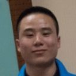

成长档案
59 位有迹可循的头马人

Keven
北航头马的创始人——那个把俱乐部从0带到一群人的"凯文大帝"，一个温和、博学、爱抱着吉他自弹自唱的引路人。

Deron
北航头马的"即兴灵魂"——一位年轻博士，用问题点燃舞台，是俱乐部多年如一日的主持台柱与幕后守护者。

Kiki
从广州一路讲到北京的环境工程女孩，敢上台敢卸妆敢哭，把"铁血主席"和"全场最佳"都演成了自己的样子。

Bowen
从国关走进北航头马的温柔前主席，用逻辑与真诚把舞台一路讲到CC10。

Peter
北航头马早期的主席与最活跃的"全能选手"——一口标准英音、爱读书、段子与思辨兼具的男神级老member。

John
从破冰新人成长为俱乐部"最有言值"的台柱——既能稳稳掌控全场，又能把人生道理讲得温柔通透的头马常青树。

Joshua
从浪漫型男到铁血掌门——把"高质量俱乐部"刻进任期的北航头马主席。

Gastby
那个害羞内敛、却总在台上即兴杜撰逗笑全场的"邻家大男孩"，竹笛与演讲都拿得起的北航头马多面手。

Joy
学心理学的温柔老人——用专业洞察人心、用诗意点亮舞台的北航头马多面手。

Sophie
从破冰新人成长为北航头马掌门的"Queen Sophie"——气场强大、独立优雅，把俱乐部带向欣欣向荣的女主席。

Grace
北航头马早期的活跃成员，站上过 Toastmaster 主持台、撑起一整场会议节奏的可靠面孔。

Vance
从不敢上台到稳站舞台的"追风少年"——爱运动、爱旅行、追求把每件事做得更好的完美主义者。

Jack
从计时员一路走到CC10的"玫瑰先生"，幽默、长情、把破冰坚持成了归来。

Amy
从破冰新人一路成长为主席的"段子手二姐"，把欢乐和担当一起留给了北航头马。
Sarah
一位用工程师理性和女性细腻打磨演讲的北航头马"鸡汤女神"，从CC1一路走到AC、登上比赛舞台。

Han
从研一下学期慕名而来，一步步从紧张到淡定的"沉稳系"学霸演讲者，主持台上从容，演讲里讲求真诚与不着急。
Qiqi
从破冰到主持、点评、比赛全程在场的"敢于尝试"型头马成长样本，那个落落大方、声情并茂的女神级演讲者。
R
Rocky
从北科跨校而来的高调阳光大男孩，会场上最活跃的主持人与即兴玩家，用体育与母校的故事一步步走完破冰到成长之路。

Grace2
总在即兴环节率先登台、自信从容的北航头马常客

Kaisense
从一个害羞男孩成长为俱乐部主席的头马布道者，用行动诠释"敢说"的力量。
Doris
从资深会员到主席、走完全套CC的"多老师"，温婉而坚定的语言学才女，毕业了仍一次次回到头马舞台。
Chen
北航头马的"大忽悠"与幕后操盘手——一个用幽默把人忽悠进门、又用笔杆把俱乐部记录下来的公关副主席。
Andy
来自温州的博士驴友，温柔幽默、讲故事会让人动容的头马人。
J
Jason
来自外院的"学霸"型选手，话不多却言出有物，用行动证明"行胜于言"的北航头马人。
Summers
一个把"我爱英语"挂在嘴边、肢体语言一流、段子信手拈来的欢乐担当。
Fiona
从沉默的萌新到笑容常驻的舞台主持人，一步步把头马走成自己成长的注脚。
M
Milton
一位见微知著、热爱即兴主持的计算机博士，从腼腆的破冰者成长为俱乐部最活跃的"摆渡人"。

Flair
从拘谨腼腆到台上侃侃而谈的"爱笑爱闹爱戴帽"大男孩，用真实人生故事打动每个人的成长型头马。
Dale
自律到清晨五点起床的极客型演讲者，从CC1一路讲到CC4、最出色的SAA，还在头马收获了真爱。
Jill
从"接纳自己"破冰起步、一路稳扎稳打讲到CC7的暖心姐姐，话题敢碰社会议题，也乐于站上主持台。

Jane
北航头马的"白衣天使简姐姐"——用故事治愈人心的护士演讲者，从破冰新人成长为常驻主持与点评官。
M
Michael
从台下即兴选手一路成长为俱乐部主席的实干派，一支竹笛吹出头马人的诗意与坚持。

Winston
从一支竹笛、一首老歌里走出来的温柔台柱——以稳健的主持和真诚的分享，串起北航头马一场又一场的相聚。

Lucia
从破冰到登上比赛舞台、被大家称作"大腿"的成长型选手，自信、沉稳又幽默的学习机器。
Monk
从破冰到毕业一路走心的"神僧"VPE，俱乐部最有人情味的教育担当与段子手。

Cyril
北航头马的掌门人——从主席到即兴主持都拿得起的"老船长"，用奶茶和故事点亮俱乐部的人。
Veronica
从容自信的"铁娘子"，北航头马早期的中坚力量，用一篇篇备稿稳步走完 CC 之路。
C
Cynthia
镜头背后的教育担当——既能拿下备稿演讲冠军，又默默为俱乐部剪出一段段精彩回顾的VPE。
Eric
阳光自信、球场与书本兼得的"篮球男神"，把害怕讲成段子的破冰新人。
M
Mike
心怀科学家梦想的四川博士，被戏称"马爸爸"的自信发言者与幕后实干派。
C
Cicily
发音动听、热爱英语的Big Bang女孩，从台下到台上一路绽放的头马新星。
F
Francis
高高帅帅、爱笑又高情商的暖系小鲜肉，从失恋走进头马、在掌声里重新学会幸福。

Crystal
来自瓷都景德镇的才女，从怯场到拿下Best、勇闯英文演讲赛的学术型演讲者。
Isabelle
学法语、爱时尚、在台上台下都自带灵气的"北航头马女王"，破冰即惊艳的温柔战将。

Vicky
人称"学霸"的神秘才女，从CC2一路讲到CC4，台上沉稳、把故事藏在心里的北航头马女将。
Jocelyn
从破冰到毕业又重返舞台的"点评女神"，温柔知性、心思细腻，是俱乐部里最会评、最爱书的姐姐。
Channing
从破冰即夺最佳的爱运动美女，短短两月便从新人成长为主持人的北航头马新星。
Junyar
从即兴主持起步、聪慧自信又爱唱歌的北航头马姑娘，一路从破冰走到 CC3。

Bean
从贵阳走来、唱比说更动听的北林才女，把头马当作即将离京前最温柔的告别仪式。

Mauna Loa
用老子与海德格尔思考人生的"火拳"哲学家，火焰不灼人、只给人温暖的北航头马VPE。

Huanhuan
从台上略显羞涩到拿下中文比赛第一的活力女孩，俱乐部里热情的"颜值与即兴主持担当"。
Nancy
从CC1一路稳步走来的"薇薇公主"，把头马当作克服恐惧、与人真诚分享世界的舞台。

Elena
从破冰新人成长为活跃主持的女性，用"我们是不可定义的"为自己和他人发声。

Amanda
一位以点评与主持见长的资深会员，用稳健的台风陪伴俱乐部走过一个个夜晚，最后在毕业季优雅告别。

Rita
一位从英语专业走来、把减肥与梦想都讲成故事的可爱演讲者。
Maggie
温柔细腻、勇于自我突破的北航头马姑娘，从破冰新人成长为俱乐部的对外门面与即兴主持。
Chad
来自兄弟俱乐部的资深嘉宾与区域负责人，常以演讲、点评与评委身份为北航头马传经送宝。
Stan
一个心思细腻、温和沉稳的头马新人，用一片星空开启了自己的演讲旅程。
Wesley
北航头马的创始人与教父，一个用"知行合一"把一时心动变成一座俱乐部的人。
名字墙
出现过不止一次的 158 个名字
Keven69Deron49Kiki40Bowen39Peter37John34Joshua30Gastby30Joy29Sophie29Grace28Vance26Jack25Amy25Sarah23Han21Rocky20Qiqi20Grace220Chen18Kaisense18Doris18Andy17Jason16Milton15Fiona15Flair15Jill15Jane15Summers15Dale15Michael14Winston14Cynthia13Cyril13Monk13Lucia13Veronica13Mike12Crystal12Francis12Eric12Cicily12Claire11Samuel11Frank11Isabelle11Vicky11Star10Jocelyn10Channing10Junyar10Bean9Mauna Loa9Ellen8Yang8Huan8Aileen7Carrie7Huanhuan7Brittney7Britney7Nancy7Babara7Elena7Bloomfield7Amanda7Daisy6Howard6Lily6Allen6Blair6Bowen6Courage6Maggie6Rita6Justin5Wincher5Chad5May5Tony5Gasby5Joshua5Yolanda5Kevin4Betty4Annie4Flair4Mauna Loa4Gatsby4Freshen4Wesley4Deron4Rachel4Sara4Stan4Cindy4George3Evelyn3Lucas3Ada3Bill3Sun3Kaiyuan3Claire Gong3Amy3Ceasar3Gastby3Joy3Daniel3Emma3Bowen3Paul3Emily3Chris3Megan3Red Runyon3Zachary2Charles2Amber2赵贝贝2Yang Wu2Chen2龚新宇2Wicher2Arthur2Bree2Tanner2Jenny2Miguel2郭元东2陈星2Nick2张纯洁2胡雪欢2朱巾帼2Roc2Antonio2汪菲2Kiki2安东2Brenda2刘桥2tiger2朱泰伯2多老师2Pedtro2徐方亮2Yeager2Sherry2Tea2李映森2Berrina2Jill Chow2Doris Yu2Veronica Hu2Sunny Xiang2Shawn2